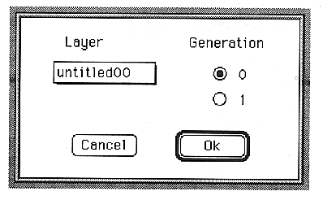
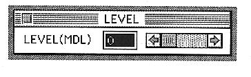

LAYER popup menu
Displays the layer name.
Generation ・0 Latest data ・1
MDL window
You can open it by double-clicking the MDL block in the- Slot window.

The parameters set in this window are as follows:LEVEL(MDL)
Sets the modulation input modulation effect (modulation level).
You can set a value between 0 and 15.